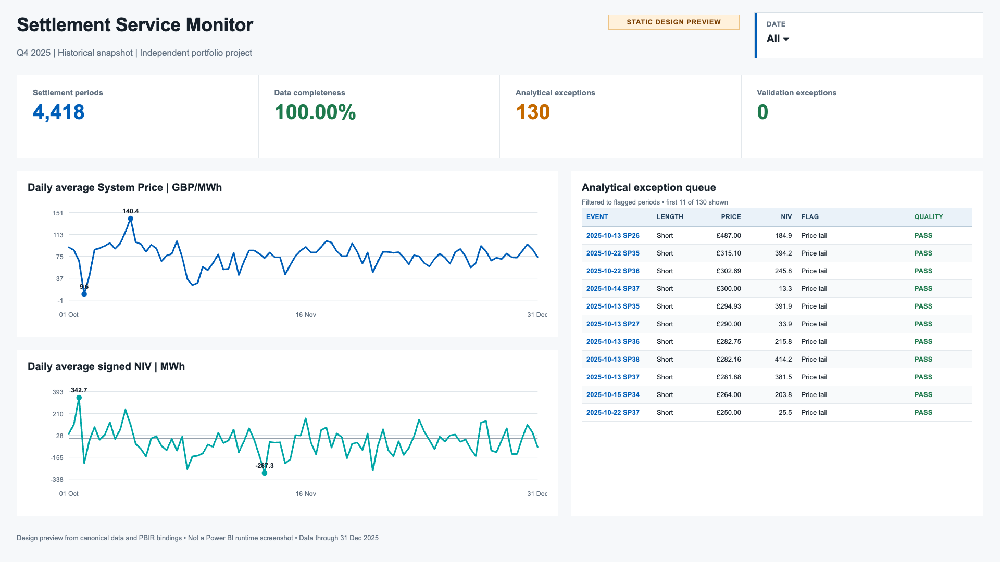
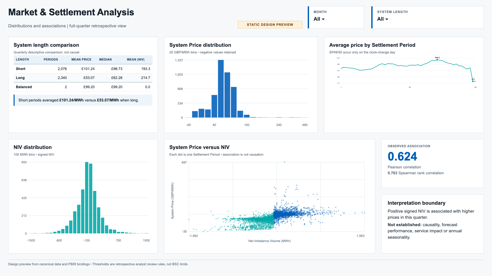
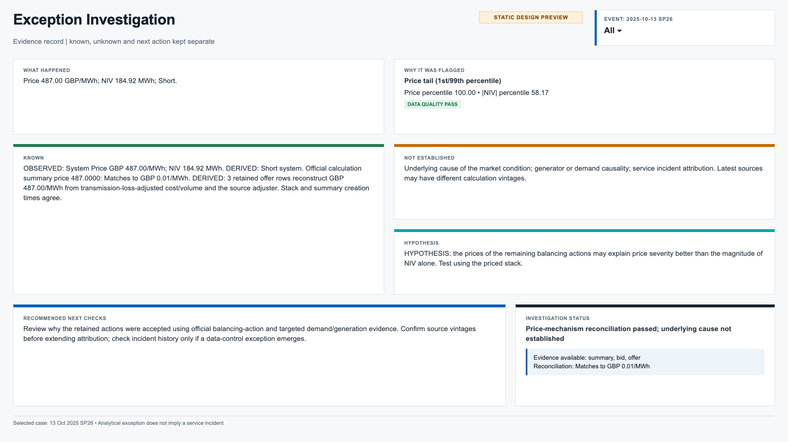
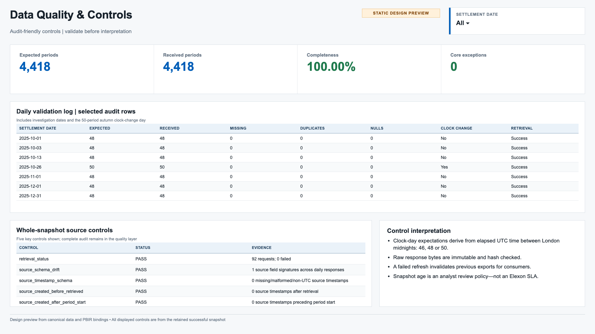

Canonical Q4 2025 release
From settlement data to an evidence-led review queue.
A service-analysis case study using public Elexon data, reproducible Python and SQL controls, and a four-page Power BI report definition.
Four-page Power BI design
A report organised around operational decisions.
Data-bound static previews built from the canonical Q4 outputs and checked-in PBIR inventory. They are previews—not Power BI runtime screenshots.
Evidence boundary: licensed Power BI still needs to verify live refresh, DAX, filters, accessibility and performance.

Surface the day and period worth reviewing.

Explore settlement price and system length.

Move from a flag to evidence and next checks.

Check trust, coverage and exceptions.
Findings
Screen for attention; do not overstate certainty.
The Q4 screening queue contains 130 flags: 92 price flags and 45 NIV flags, with 7 overlapping periods. The design preserves the distinction between a statistical flag, a reconstructed price component and a causal conclusion.
Why 130, not 124?
The separate 124-flag result is a reproducible Aug–Oct rebuild: 95 price + 45 NIV − 16 overlaps. It is not the source behind this report.
Both windows contain 4,418 records, but they use different months and therefore different full-window empirical percentile thresholds and overlaps. October source responses match across both snapshots; the change is window composition, not threshold tampering.
Read the full reconciliation →Methodology and controls
Trust is part of the analysis.
Retrieve
Immutable daily public responses, request receipts and SHA-256 manifests preserve a retrieval trail.
Validate
Schema, timestamps, keys and 46/48/50 Settlement Period coverage are checked before analysis.
Screen
Full-quarter percentile thresholds identify attention points without claiming that flags are errors.
Reconcile
Independent Python and DuckDB checks agree on nine material aggregates.
Investigate
Each case separates known evidence, hypotheses and the next operational check.
Recruiter review pack